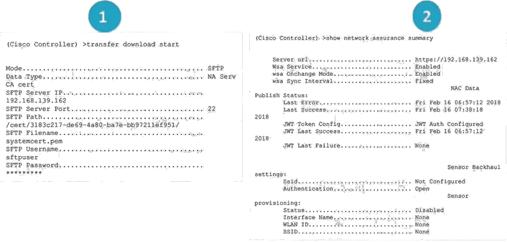
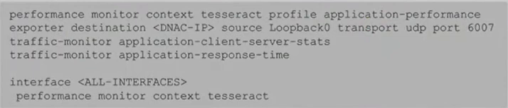

Cisco DNA Center is the orchestration platform for designing, provisioning, and implementing policies on the network. It provides visibility into the network and an understanding of the user experience of network services. It collects telemetry from existing multiple devices, applications and users. It applies advanced algorithms to uncover correlated insights and suggest remediation. This helps in minimizing the troubleshooting time by identifying root-cause of problems. Health scores are complied from different metrics. With Cisco DNA:
All network elements report information back to the console. The console analyses their behaviour and assigns a score depending on the network performance.
The DNA Assurance landing page provides summaries of network and client health. The network health displays health summaries (in percentages) of switches, routers, wireless LAN controllers, and access points. The client health displays summaries of wireless and wired clients.
Cisco DNA includes guided remediation provides suggestions for correcting a problem
SD-Access fabric, in a campus network enables the maintenance of network policies to a roaming user regardless of their location. SD-Access uses IS-IS as the underlay protocol and LIST-VXLAN+TrustSec in the overlay protocol to allow users with their devices to be onboarded onto the network and maintain their same network configuration anywhere on the network.
The SD-fabric is created by DNA center. A guided workflow is used to setup the entire SD-fabric. There are four in total:
The DNA center systems connect to the network devices such as APs, switches, routers, firewalls. These devices typically run on IOS-XE such as catalyst 9000 series switches, ISR-4400 series routers.
DNA center communicates with these devices using programmability protocols Netconf/Restconf. When DNA Center communicates with devices using Netconf/Restconf, it creates a telemetry subscription through which the devices can stream data such as CPU, memory utilization, interface, ACL counters; basically all output from show commands are streamed to the DNA Center. DNA Center stores this information and logs it into a database with the timestamp of occurrence. This enables understanding these parameters across a time range. This information collected is from network devices as well as client information.
DNA Center applies machine learning to this collected telemetry information.
The landing page of DNA Center is the DNA Dashboard. This lists information aggregated over the last 24 hours.
The Network Health section of the DNA Assurance center displays the health status of network equipment such as routers, switches, wireless LAN controllers(WLC), and access points (AP). It gives a snapshot of the device health of the past 15 minutes and past 24 hours.
Network devices are categorized based on their role or type i.e., wireless, core, access, distribution, router, switch.
Network Health can be accessed via the Network Devices section of the DNA Center Assurance. This view provides an aggregated score of the health of monitored devices for the defined time range.
The procedure to setup DNAC is as follows:
DNAC requires a set of global credentials to use when enrolling the devices into DNAC. These settings are the same as Discovery credential sets:
Credential sets define common global credentials, specified in global container, and instance specific credential sets, specified per container, for network devices in a discovery. Credentials in higher-level containers inherited by lower level containers. DNAC allows multiple credentials to be specified for a defined credential type. Support for exceptions (non-common) credentials can be included in discovery. DNAC automation can add missing credential sets to devices upon discovery.
If multiple credentials are configured, DNA will start with the first credential, then the second, third ... up to the credential that works. DNA will remember the credential that worked for a given device.
Different device types are managed through different credential types:
For discovery to work, the required ports include:
At a minimum, CLI and SNMP details are required for DNAC to discover devices. For SSH/Telnet login with privilege level 15. For SNMPv2c community read-only string is required.
In DNAC, these credentials can be added from the Design tab, under the "Network Settings" menu and "Device Credentials" menu item. The credentials can be set for the Global area or lower area in the hierarchy. Credentials configured at the global level will be inherited by the areas under the Global location. If a list of credentials is available for a given site, select the appropriate credential that will be used by clicking the radio button of that corresponding credential.
Container hierarchy divided into groups:
For devices to be managed, they must first be discovered. The discovery feature:
Under the "Ham" menu, select "Tools" then "Discovery". Select "Add Discovery". Discovery supports the following types of device discovery:
At least one CLI credential and one SNMP credential is required. Netconf is required for 9800 series switches.
Select "View Inventory" to view the newly added device. To add the device to a site:
The protocol order of the credentials can be specified. The options include SSH and Telnet. If Telnet is enabled, a warning message gets displayed about the insecure nature of Telnet.
When discovery is run with "Device Controllability" enabled:
During the networ discovery process, there are several changes that DNAC automatically makes to WLCs:

DNAC becomes the network assurance service for that WLC from the start.
There are several changes that DNAC automatically makes to switches during discovery:
If an ACL is configured for SNMP community string, DNAC may remove the ACL during discovery. Remember to add the ACL after the DNAC discovery is complete.
When device discovery or add is performed with "Device Controllability" enabled, DNAC will configure IPDT on discovered devices. IP device tracking(IPDT) is activated on switch ports operating in the switchport access mode. IP Device Tracking keeps track of connected hosts on a switch. IP device controllability sends an ARP probe on that access interface to check that the device is alive. This ARP is not propagated out any other port. This helps in tracking where clients are connected in the network. If the MAC-address tracking is used, and the device is connected to the network but is silent(not accessing network services) MAC addresses timeout in the MAC address cache on the switch. This will assume that the device is off the network. With IPDT, we allow the MAC address not to timeout. When the MAC address timer is close to expiry, an ARP probe is sent out that particular access port that the device is connected to and when the device responds, the MAC address timer is reset.
There are several changes that DNAC automatically makes to routers during discovery:
Assurance requires devices to be assigned to a site in order to push telemetry configuration. It is important to assign a device to a site. This is because network telemetry may not be received for the device if it is not assigned to a site. Assigning a device to a site does not push configuration to the device.
When device discovery is completed, the device is under the Global site and categorized as under "unassigned devices". Unassigned devices not not have a site allocation.
Telemetry profiles can be configured to send Syslog, and NetFlow configs to supported devices. Telemetry profiles include two predefined profiles. Custom telemetry profiles can be added. Three default telemetry profiles exist for use in provisioning assurance configurations. These include: maximal, optimal and disable.
| Profile Name | Syslog level | NetFlow |
| Maximal | Informational | IPFIX |
| Optimal | Informational | |
| Disable |
Profiles can be assigned at site or device level. The default assined is Disable telemetry. The recommendation is to apply Maximal to routers and Optimal to switches.
Custom telemetry profiles can also be created in exception use cases where the best practice telemetry profile settings need to be altered. If custom telemetry profiles are configured and the device does not support the telemetry profile configurations e.g. NetFlow, then DNA will produce a notification message. The supported telemetry configuration will be pushed to DNA and the unsupported telemetry will not be pushed.
Telemetry profile push is used to assign profiles to specific devices and validate configuration push. If the predefined telemetry profiles are used, telemetry information gets pushed to DNAC immediately after being applied.
Verify assurance dashboards are being populated with expected telemetry data. DNA sets itself up as a syslog server to be able to collect data from that device.
Netflow is required for Application Health data. DNA provisioning of NetfFlow is only supported on routers running IOS v16 or newer. The current behaviour is for NetFlow to be enabled on all interfaces of routers.

Gives a full view of the device. You can monitor and preview the health parameters of the network. Device 360 displays the following parameters:
In the case of APs, the following information is learned:
Accessible via: Gears → Systems Settings → Data Platform (Tab) → Collectors. Select Collector-SNMP. The defaults are ok. If utilizing SD-WAN, then can make appropriate modifications suitable for SD-WAN.
To get a view of the health status of the clients. Client devices are segregated between wired clients and wireless clients. A broken-down view of every step of the onboarding process is displayed making it possible to determine if the network infrastructure is causing the fault or the network service such as AAA.
Displays details of a user's network connected devices and their user experience.
Includes vital information such as business-class, traffic class, packet-loss percentage and latency. Can be accessed under DNA Assurance dashboards and under Application Health. Some applications on the network can be defined as business relevant.